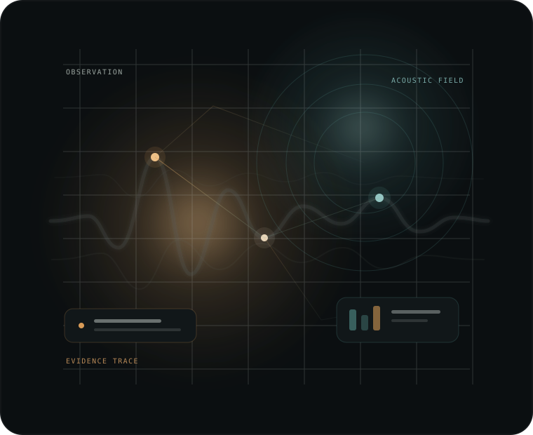

The problem
Bioacoustic systems can produce convincing classifier outputs without providing enough discipline around independent evaluation, model comparison, provenance, and release decisions.
Bioacoustic intelligence · research platform
Faunometric is a proprietary software and research platform for observable-signal classification, reproducible held-out evaluation, evidence-governed model assessment, and controlled release workflows.
Public showcase only. The underlying implementation remains private proprietary IP.

Purpose
Bioacoustic systems can produce convincing classifier outputs without providing enough discipline around independent evaluation, model comparison, provenance, and release decisions.
Faunometric keeps observable acoustic classification connected to reproducible evaluation and evidence-aware decision boundaries.
The platform is intended to make model results easier to inspect, compare, reproduce, and govern without turning classifier output into unsupported biological claims.
Core capabilities
Capabilities are described at product level. Proprietary algorithms, schemas, training assets, model weights, and implementation details are intentionally excluded from this public site.
Supports classification of observable acoustic and contextual signal patterns across multiple model families.
Supports group-aware evaluation designed to test generalization beyond the individuals represented during training.
Formal study settings and evaluation populations can be fixed before comparative analysis to reduce accidental drift.
Model comparison is separated from model promotion, with explicit handling for unresolved or insufficient evidence.
Model artifacts and their accompanying metadata are designed to remain bound to the evidence and source identity that produced them.
The current development line introduces self-contained release-evidence bundles intended for later offline integrity verification.
Design principles
Classification is framed around measurable acoustic evidence rather than claims of verified semantic animal-language translation.
Evaluation is structured to distinguish training performance from evidence about generalization.
When comparative evidence does not support a unique selection, the platform is designed to preserve that uncertainty instead of manufacturing a winner.
Hash-based integrity and provenance controls can show consistency of artifacts; they do not create legal authorship, regulatory approval, or biological truth.
Project status
Faunometric is not presented here as a public SaaS service or commercial checkout. This GitHub Pages site is the public documentation and portfolio layer only.
Last fully validated functional baseline
Faunometric 5.3
A source-bound full GPU validation pass is recorded for the 5.3 functional baseline, including the project regression suite and release-governance checks.
Current development line
5.4
Development adds portable release-evidence preservation and offline verification. This line remains subject to fresh exact-source revalidation after functional changes.
Scientific boundary
Classification, not translation
Software validation and synthetic evaluation do not establish biological validity, real-dataset performance, verified semantic decoding, or causal intent.
High-level concept
This diagram intentionally omits proprietary algorithms, internal schemas, data structures, infrastructure, and security implementation.
Public / private boundary
This site explains what Faunometric is designed to do and why those controls matter. The underlying repository, source code, model assets, datasets, detailed architecture, internal test material, and implementation logic are intentionally not published here.